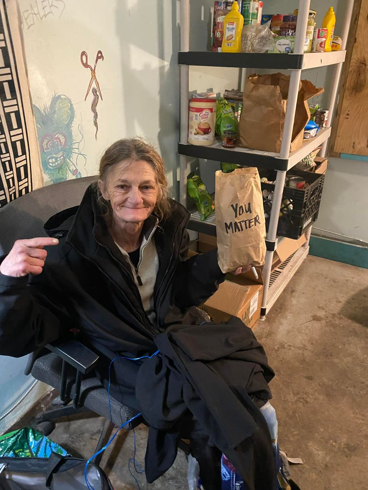

Mobile uploads
This is Joyce.
She has a dark spot on her left lung. She needs to get a biopsy to see if it’s cancer. She weighs 85 pounds and has one of the worst coughs I’ve ever heard. Sometimes it’s really hard for her to stop coughing.
She lives in the woods and has done so all winter.
A supporter made these lunches and wrote “You Matter” on the bag.
Joyce really liked that message. She asked me to take her picture with the bag. So I did.